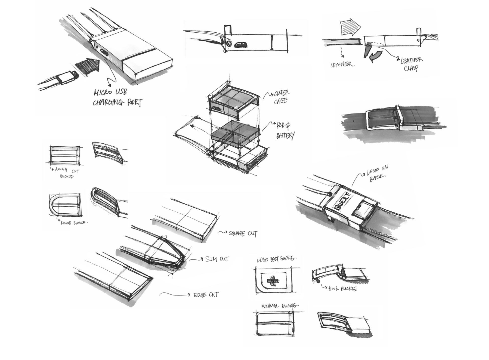

Smart Belt
WELT Corporation
Title: Head Designer
2016.4-2017.8
WELT Corporation is a spin-off healthcare venture project from Samsung Electronics Creative Lab. Its product, Smart belt, is a world's first belt wearable healthcare solution for obesity and metabolic syndrome. Currently, WELT's corporate values over $800k and is a reaching significant global sales.
I have managed WELT project across research, hardware and software product development, mass production and sale. I am also responsible for all of WELT's design outcomes including product, UI/UX, GUI, brand identity, packaging and promotional design.
Visit Site Good Design AwardIoT, Healthcare, Fashion
Monitoring unique health data obtained in waist area including waist circumference, food consumption pattern, and activity levels, the service aims to provide personalized healthcare with actionable insights to manage chronic diseases. WELT is the most natural wearable for healthcare, and is both fashionable and functional, made for everyday life and everyday outfits. As the stylish alternative to previous belt or fitness trackers, WELT provides the most natural user experience.
Actionable Health Insight
WELT provides comprehensive health analysis with insights and warnings so users can focus on staying balanced. WELT’s health goals are personalized individually based on user's health data. As more data is accrued, WELT will become even more fine tuned to meet one's fitness goals. Also intuitively organized into one page dashboard, health data is composed for easier user experience. WELT intends to keep interface as simple as possible to avoid users's hassle to read information
Product Development: Market Needs
Controlling weight gain is never easy. It is also difficult to provide customized treatment because for accurate diagnosis, healthcare providers need information of the health habits that patients accrue overtime, including eating habits, activity habits, and weight/waist history. These bad habits lead to central obesity and ultimately lethal chronic diseases including diabetes, hypertension and hyperlipidemia.
Although there are many fitness bands and smart watches that intend to monitor daily health logs, 33% of activity trackers are abandoned within 6 months due to uncomfortable UX. Moreover, majority of products focus on tracking calorie burn, only one of many aspects that cause weight gain, which is not an effective method of monitoring.
Waist Circumference, activity, and eating pattern
The smart belt tracks these three biometrics. Waist size is the most absolute metric of obesity. According to WHO, a male adult with waist circumference larger than 90cm is obese regardless of his weight and height. Because two men with different waist size can still have same weight, health information from only the weight data can be misleading. The smart belt takes waist circumference, activity level, and eating pattern (from changes of waist size) and provides actionable insights to balance calorie in and out.
Product Sketches
The major focus was on ‘invisibility’ of technology - to hide technology yet be aesthetic fashion item.
Function Prototypes & Form Sampling
Hardware & Mass Production
Quality control and supply chain